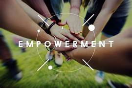

Significance
Empowerment helps enable people to take initiative, make decisions for themselves, and solve complex problems.

They are more prepared to step forward, make decisions, and solve problems. In this lesson, you will connect the idea of empowerment to the initiative you want to see on your team.
Empowerment helps enable people to take initiative, make decisions for themselves, and solve complex problems.
When people have motivation, meaningful goals, and room to act, empowerment can become visible through initiative.
Think of a time when someone empowered you. What did that person do that helped you move from feeling capable to taking action? Pause and consider the moment in a few sentences.
Keep one strategy cue in mind. Next, you will explore strategies that can be tailored to foster a culture of initiative within your team.